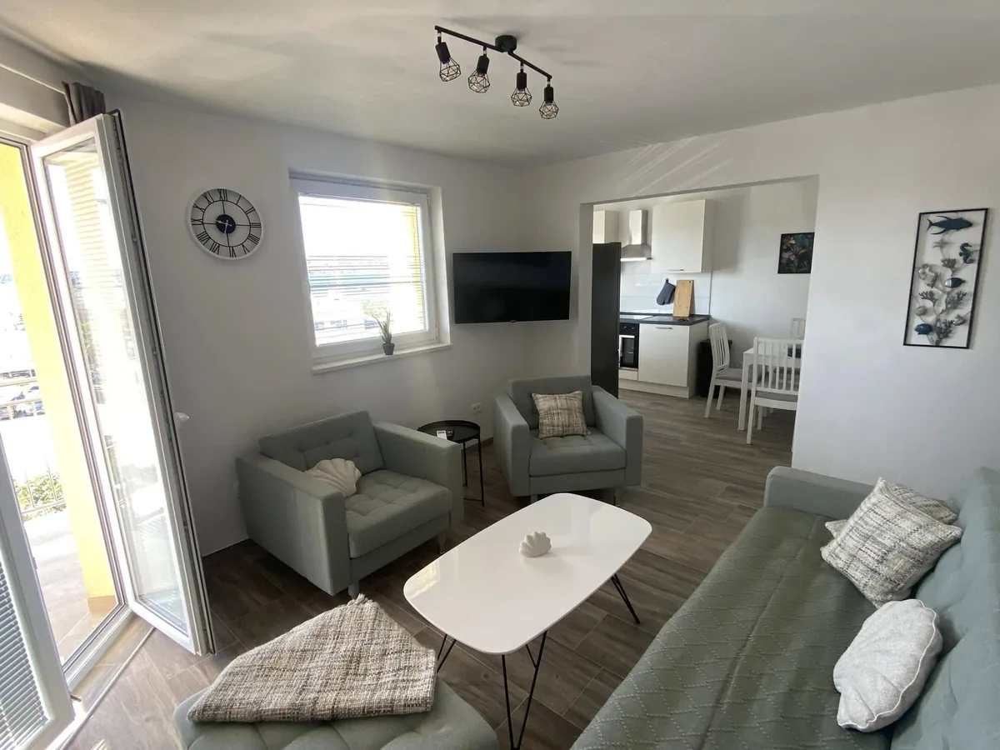
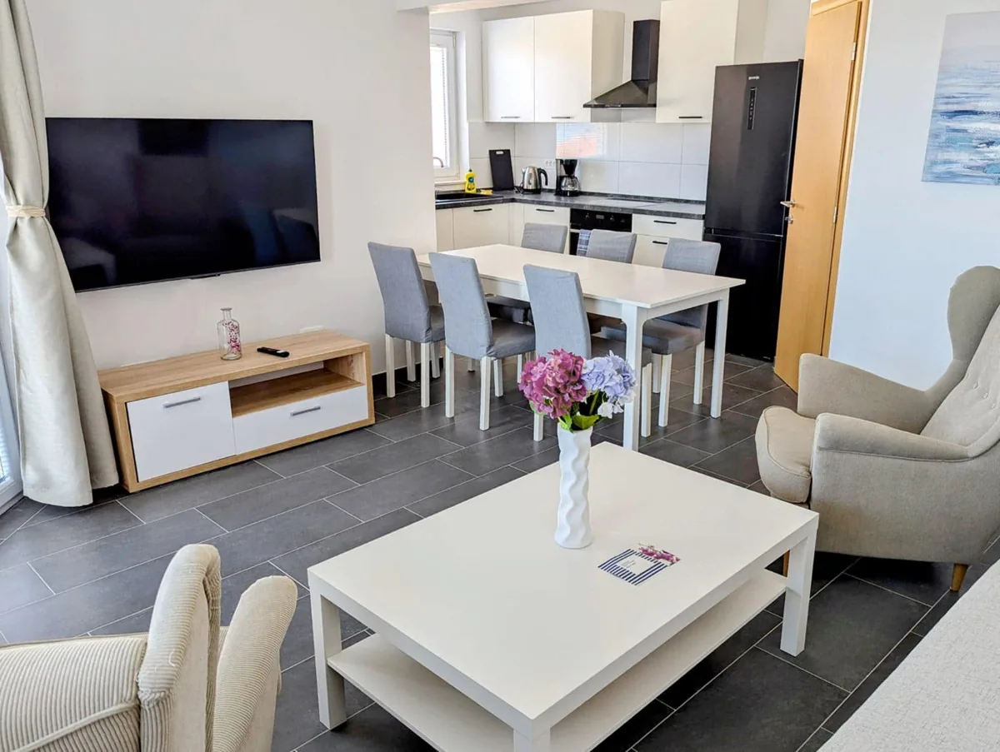
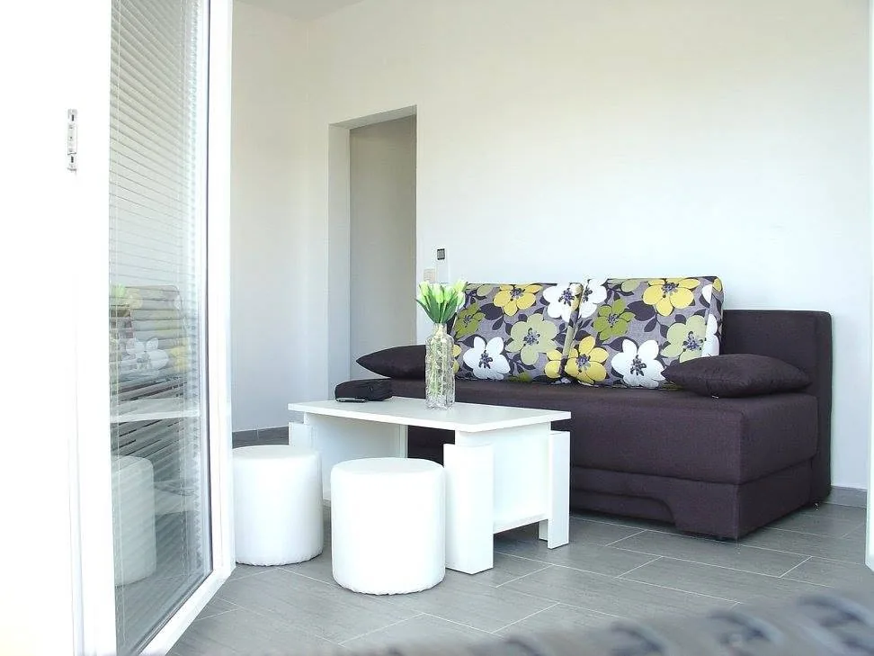
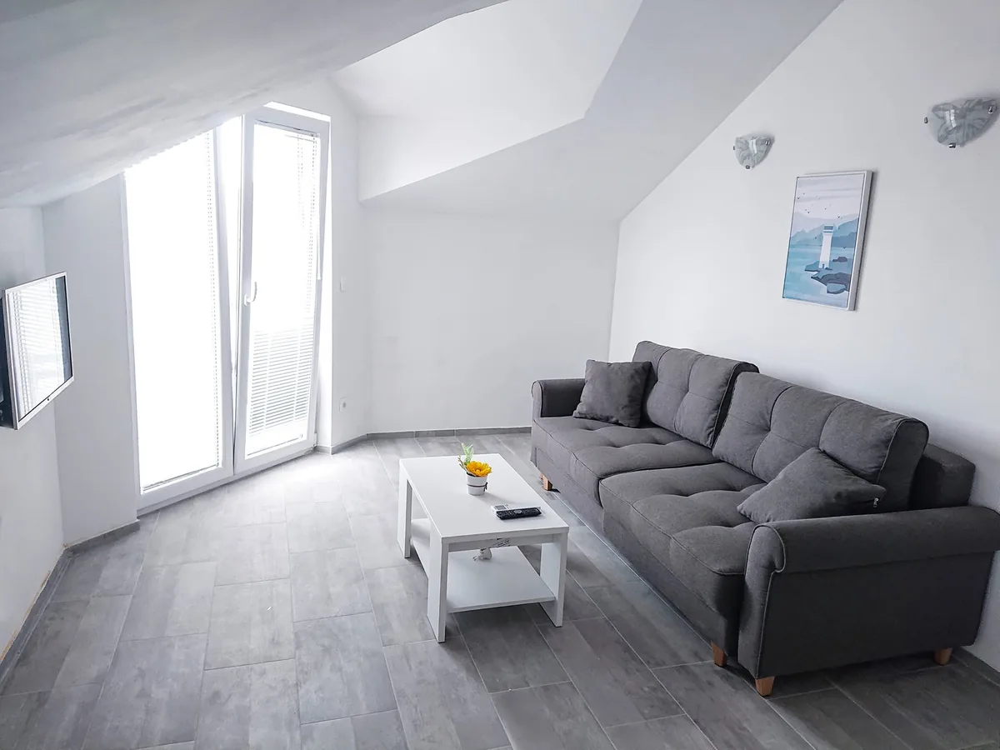

Sea-view, self-catering apartments a short walk west of Trogir — a quieter, better-value base for families and couples who don't need to be in the old town. Here's an honest look at who they suit, and who shouldn't book them.
Seget Donji, a quiet spot just west of Trogir — about a 15-minute walk to the old town, a 5-minute walk to the beach, and roughly 10–15 minutes by car from Split Airport.
Three-star, self-catering apartments from compact studios to 80 m² two-bedroom units. All with AC, WiFi and a sea-view terrace or balcony.
Families and couples who want space, a kitchen and a quiet sea-view base, and don't mind a short walk or drive into town.
Written by Ante Milic · Last updated June 2026
Location is everything with accommodation, so let's be straight about it. Mornari is in Seget Donji, the calm village next to Trogir — not inside the old town. That's a plus for some trips and a minus for others.
You want a sea-view terrace, a kitchen and room to spread out for less than an old-town room; you're travelling as a family or couple; you have a car or are happy with a 15-minute seafront walk; and you value a quiet evening over being in the middle of things.
You want to step straight out of your door into the old town's lanes and restaurants, you have no car and want everything walkable, or you're after a hotel with a pool, reception and daily housekeeping. In that case, an old-town stay is the better call — see our independent best hotels in Trogir guide.
You swap "in the heart of the old town" for more space, a sea-view terrace and a lower price — plus a quiet beach and the marina on the doorstep. Whether that's worth it depends entirely on the kind of trip you want.
There are nine units in total; these are the four we have full photos of. Sizes, layouts and views vary, so pick by group size and what matters most to you.

The roomiest unit: two bedrooms, a full kitchen with dishwasher, a living room with sofa bed and a sun terrace looking over the marina to the sea. The most comfortable choice for four or more.

A second two-bedroom apartment, including a bunk-bed room with a sea view that works well for kids. Same size and kitchen as 2.1, with its own terrace — a practical base for a family week.

A bright one-bedroom apartment whose highlight is a generous 26 m² terrace with a barbecue and a view over the marina. An easy, good-value base for two.

A compact, bright top-floor studio with a modern living area and a balcony with a sea view. The simplest, lowest-cost option for one or two.
Photos are our own, from the apartments themselves — not stock images. Five further units (not pictured here) range from compact studios to similar sea-view apartments.
Knowing the setting matters more than any single photo. Here's what staying in Seget Donji is actually like.
It's about 1 km to Trogir's old town — a flat 15-minute walk along the seafront, or a few minutes by car or local bus. The beach is even closer, about 5 minutes on foot. Pleasant on a cool morning or evening; less so lugging shopping at midday in August.
Seget Donji has its own clear-water pebble beach and promenade a short stroll away, plus a marina. For the wider picture, see the beaches near Trogir.
Split Airport is about 10–15 minutes away by car, which makes a first or last night here easy — sort the airport transfer. A car also opens up Krka and the coast road.
Evenings are calm, which most guests come for. If you want nightlife and lots of restaurants on your doorstep, you'll be happier in the old town or in Split.
In Seget Donji, the next coastal village just west of Trogir, on the waterfront near the marina — a quiet residential spot rather than inside the old town.
About 1 km — a 15-minute walk along the seafront promenade, or a short drive or local bus. The beach is about a 5-minute walk, and Split Airport is around 10–15 minutes by car.
Yes. The 80 m² units have two bedrooms (one with a bunk-bed room kids like), a full kitchen and a sea-view terrace, and the quiet location with a nearby pebble beach suits families who want space over being in the busy old town.
Yes — the apartments shown all have air conditioning, WiFi and a sea-view terrace or balcony, plus a kitchen for self-catering. Sizes run from compact studios to 80 m² two-bedroom apartments.
Through the official Mornari Apartments website. As noted above, the apartments are managed by this site's operator — so weigh them against the independent options in our best hotels guide before deciding.
See availability, layouts and current prices on the official site. And if an old-town base suits you better, that's genuinely fine — our independent hotel guide is one click away.